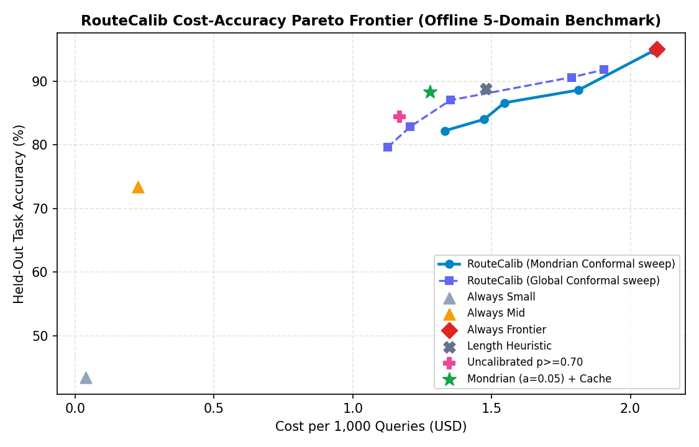
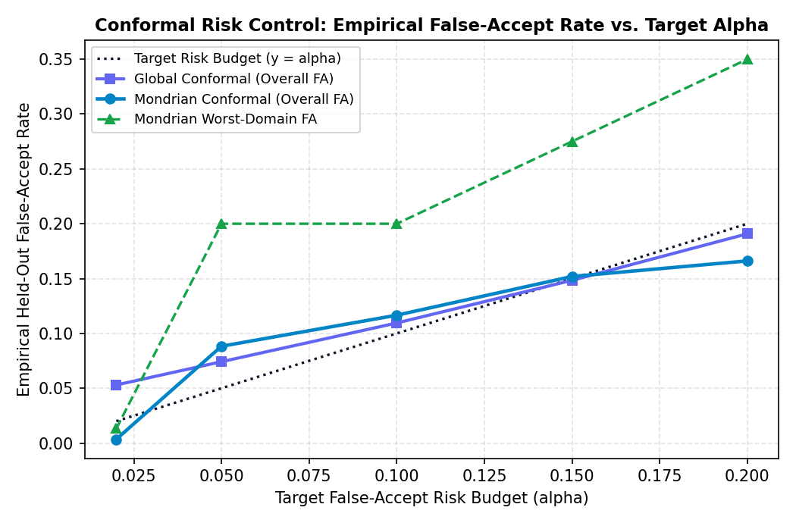
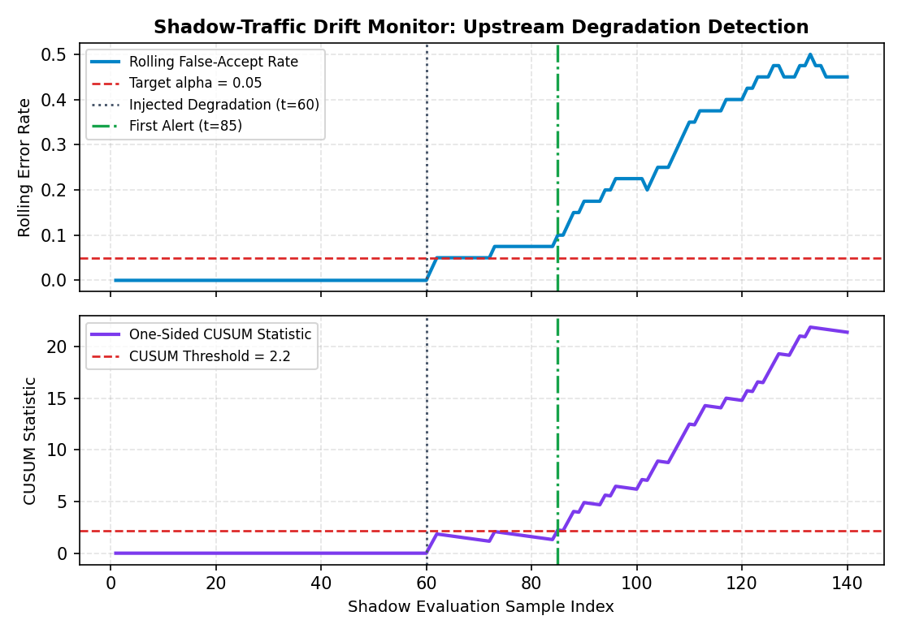

Cut LLM inference spend without silently breaking accuracy.
RouteCalib is a sub-millisecond OpenAI-compatible routing proxy that sends easy queries to fast local/small models and escalates hard prompts to frontier models using Mondrian Split Conformal Prediction, SLA caps, a numeric-guarded semantic cache, and a CUSUM + Wilson drift monitor.
Test the Real Calibrated Router in Your Browser
Powered directly by the exported Newton-IRLS weights and Mondrian calibration quantiles (train=500, cal=500). Inspect individual routing decisions or simulate a live 50-request enterprise traffic stream.
Initializing calibrated model...
Built for Real Production Failure Modes
Three subtle production bugs that break naive LLM routers—and how RouteCalib eliminates each one deterministically.
1. Mondrian Per-Domain Risk Control
Global confidence thresholds hide catastrophic failure rates on hard coding/math queries behind easy extraction wins. Mondrian conformal calibration computes separate finite-sample failure quantiles per domain, cutting worst-domain false-accept rate from 0.2750 → 0.0132 at α=0.02.
2. Numeric-Literal Cache Collision Guard
Standard semantic caches happily match "Extract invoice #104" to "Extract invoice #105" because character/embedding similarity exceeds 0.95. RouteCalib enforces exact numeric-literal equality on every semantic hit—raising cached accuracy from 82.5% to 88.34% while saving 38.48% cost.
3. CUSUM + Wilson Shadow Drift Monitor
Conformal guarantees require exchangeability between calibration and live traffic. When an upstream model silently degrades, RouteCalib's shadow evaluator samples cheap-tier calls against the frontier tier and triggers a sequential drift alert in 25 samples with 0 false alarms.
Offline 5-Domain Benchmark & Pareto Ablations
Measured via python -m routecalib.cli benchmark --out results --n-total 1500 --seed 42 (train=500, cal=500, test=500). Router overhead is measured wall-clock CPU time; connect live Ollama/vLLM/API endpoints via OpenAICompatibleProvider.
Cost–Accuracy Pareto Frontier

Conformal Coverage (Global vs. Mondrian)

Shadow-Traffic CUSUM Drift Detection

| Policy | Accuracy | Cost / 1k | Savings vs Frontier | p50 Latency | Tier-0 False-Accept | Router p95 Overhead |
|---|---|---|---|---|---|---|
always_tier0_small | 43.40% | $0.0378 | 98.20% | 221.4 ms | 1.0000 | 0.010 ms |
always_tier1_mid | 73.40% | $0.2267 | 89.18% | 521.6 ms | 0.0000 | 0.010 ms |
always_tier2_frontier | 95.00% | $2.0941 | 0.00% | 1215.5 ms | 0.0000 | 0.010 ms |
heuristic_length | 88.80% | $1.4788 | 29.38% | 675.6 ms | 0.0777 | 0.020 ms |
uncalibrated_p70 | 84.40% | $1.1682 | 44.21% | 541.3 ms | 0.1060 | 0.080 ms |
routecalib_mondrian_a02 | 94.80% | $2.0843 | 0.47% | 1215.7 ms | 0.0035 | 0.216 ms |
routecalib_mondrian_a05 | 88.60% | $1.8136 | 13.40% | 1131.1 ms | 0.0883 | 0.215 ms |
routecalib_mondrian_a10 | 86.60% | $1.5462 | 26.17% | 884.1 ms | 0.1166 | 0.215 ms |
routecalib_mondrian_a05_cached | 88.34% | $1.2786 | 38.48% | 682.6 ms | 0.0876 | 0.150 ms |
Zero-Dependency Local Quickstart
Only requires Python 3.10+, numpy, and matplotlib. Exposes a drop-in OpenAI-compatible /v1/chat/completions proxy and local control plane.
git clone https://github.com/Eljo-M/routecalib.git cd routecalib pip install numpy matplotlib python -m unittest discover -s tests -v python -m routecalib.cli benchmark --out results --n-total 1500 --seed 42 python -m routecalib.cli serve --host 127.0.0.1 --port 8080